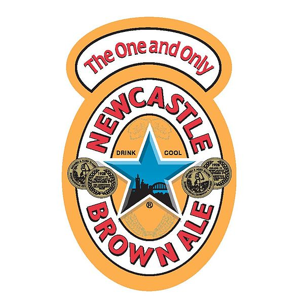

In Newcastle, we’re community of
Newcastle upon Tyne, commonly known as Newcastle, is a city in Tyne and Wear, North East England, 103 miles south of Edinburgh and 277 miles north of London on the northern bank of the River Tyne, 8.5 mi from the North Sea. Newcastle is the most populous city in the North East, and forms the core of the Tyneside conurbation, the eighth most populous urban area in the United Kingdom.
Newcastle United FC Website 